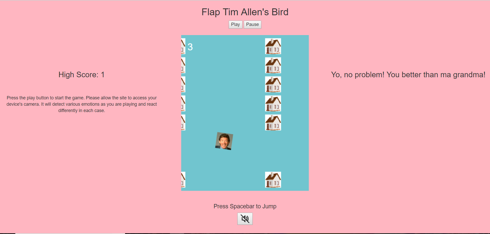
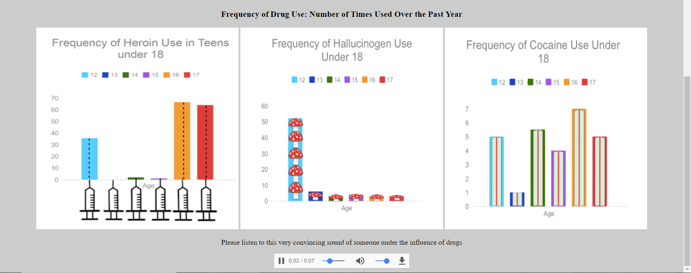

HCI Design Manifesto
How the Design Process Affects Project Goals and Completion
When designing any product with at least one user in mind, it is important to not jump the gun and dive head-first into the actual designing phase. Any form of design requires brainstorming, prototyping, and testing, all of which need to be iterated upon multiple times to end up with a satisfying final product. This is especially the case for human-centered design, which focuses on meeting the needs and goals of the user in mind. Without these carefully-planned stages of development, the end product will not meet the needs of the consumer.
Over the entirety of this course, I have learned many extremely valuable lessons from following the general steps of the widely-accepted "design process," which includes brainstorming and ideation, sketching, prototyping, testing, and final adjustments. Some of these major key points gathered from adhering to the design process include:
All of these valuable pieces of information will help any person attempting the design process to truly appreciate what results it offers.
In the past, many design companies have created products that they were satisfied with, and instead of testing those products on their demographics, they figured it would be a waste of time and instead released them to the public.
It is not wonder 99.9% of the time those products failed to meet user expectations.
User testing is a required part of the design process: otherwise, how will you know if your product will meet the needs of your target demographic? Just because you think your product is well-designed does not mean that your users do, and in human-centered design, users are the priority.
Our Design for Well-Being project required such user testing. We integrated a Flappy Bird clone into an HTML page that changed based on the emotion displayed by the player. The camera on the computer read in the user emotion through the Affectiva JavaScript library.
Because our project incorporated a game, we had to make sure that the game was fair and that our website responded correctly to the different emotions. This meant that we needed multiple people to test our game and display different emotions, especially anger, to verify that our product worked the way it was supposed to. Fortunately, al of this testing proved beneficial, as our end product was a rage-inducing game that caused players display their emotions openly to the camera.
The outcome of your final product is partly dependent on the medium used to create the project. You will limited to certain possibilities with the technology you decide to use, but it is through those limitations that an even more unique, interesting product is formed. Without limitations, there is no creativity, and it is important to always be aware of these limitations.
For the Design for Tension assignment, our group decided to create a conversational chatbot that gave advice on financial decisions. We wanted to have the user type in words to respond the chatbot's questions instead of choosing from a list of options, as this made the experience seem a lot more conversational.
However, we had decided to use Flow XO, which is not the best application to use language processing. Our bot needed to remember the answers that the user input and then respond in different ways based on those responses. This meant making multiple possible flows, each one with at least 40 different filters placed on them.
This was one of the most important lessons I learned from this course. You should have an idea of what your technology of choice can and cannot accomplish from the start. If need be, change the medium you are using to make your product, but do it before it is too late.
We had multiple projects in this class, and many times there were instances where we wanted to include certain things that we simply did not have time for. We had to limit the scope of our projects on a number of occasions.
The main instance of this that comes to mind was during our Design for Another World project. We we wanted to make a few carnival games in a virtual reality experience that the player would receive prizes for. The original ideas conceived included a "find the duck" game where you have to select the right duck in order to win, and a game where you have to knock a stack of cans over with a ball.
We ended up implementing the "find the duck" game, but it was our only game in the final product. The physics engine proved to be too complicated for us to fully mess around with, especially with the limited time we had for the project. This was a difficult but important decision to make: if we had continued to try to solve the issue, we would not have a finished product at all.
As this was a computer science class, there was bound to be some coding involved. On most occassions, we coded HTML webpages to display our projects, and with a few projects, we utilized JavaScript to provide more functioanlity to our websites.
However, human-computer interaction is not only coding. In fact, most of it is not. The focus is on good design principles and defining the user experience.
This idea heavily applied to our Design for Understanding project, where we made an HTML page that displayed graphs for drug abuse. I worked on the persuasive communication side, where we put visuals and audio over simplicity. Because of the focus on aesthetics, we had no JavaScript code for our website. Instead, we made sure that the website had an intriguing color scheme that invoked a feeling of sadness in the viewer and made them realize the impact that drug abuse has, especially on pre-teens.
Of course, human-centered design focuses on the satisfaction of the end user. However, if you are not satisfied with your own product, then neither will your users be.
Your design should be easy and fulfilling for any human being to use, while its usefulness will most likely apply only to your target demographic, as that is who you are designing your product for. If any one person cannot interact with your product, then either your product can only be used by your target demographic (which is fine in most circumstances), ot your product is badly designed. It is possible for a designer to notice these issues during development, but they will also learn through user testing.
For my Design for Others project, where my group redesigned the Technocopia site for adults in their 20s on a mobile platform, I was extremely satisfied with the work I and my partners completed, which I think shows immensely in our final product.
As we translated our sketches and paper prototypes into our final product on InVision, I could see everything coming together the way we as a group has imagined it would. In the end, we felt that we had done a great job capturing our demographic and reorganizing the original Technocopia site into a mobile experience. During testing, people who navigated our demo site agreed that there was a high degree of quality to our site: everyone involved was content with the outcome, which means we did something right.
At first glance, the design process seems unnecessary and tedious to go through. But I assure you, as a student who has now had multiple experiences iterating through each and every step of the process, it is 100% worth the effort and time.
Following each step carefully, from brainstorming ideas to forming the final product, allows for a much better product in the end, one that actually benefits the people you made it for.
If you would like to view my portfolio for this course, click here.